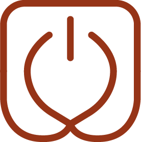

Sites Operáveis · presença digital comercial
Um site que capta clientes e que você mesmo atualiza
Uma página comercial — serviços, catálogo ou landing — com formulário e WhatsApp para receber interessados, e uma área simples para você trocar preço, foto e texto sem depender de ninguém.
Sem compromisso, conduzido pelos sócios — estratégia e finanças, sem repasse a júnior.
Quando faz sentido
Quando o site trava em vez de ajudar
- Seu site é antigo, não existe ou ficou impossível de atualizar.
- Preço, cardápio, catálogo ou portfólio mudam e ficam desatualizados na página.
- Para trocar uma foto ou um valor, você depende de um terceiro e a operação para.
- O negócio vive do WhatsApp, mas a entrada de interessados não fica organizada em lugar nenhum.
O que fazemos
Uma presença digital feita para captar contato
A página é desenhada para explicar a oferta, captar contato e ficar sob seu controle no dia a dia.
Presença comercial
Site institucional, página de serviços, catálogo ou landing — com a estrutura e a copy base que explicam o que você vende.
Captação organizada
Formulário e WhatsApp integrados, com agenda ou CRM quando o escopo pedir, para o interessado virar contato registrado.
Área de atualização
Um lugar simples para você mesmo trocar preço, foto e texto — catálogo, cardápio ou portfólio atualizável quando escopado.

Escopo fechado
Profundidade, prazo e responsáveis ajustados à sua realidade, com o escopo definido antes da implantação para não virar projeto infinito.
Como funciona
Do briefing ao site no seu controle
Briefing e objetivo
Entendemos o objetivo comercial da página e que ação ela precisa provocar no visitante.
Estrutura da página
Definimos a estrutura, o mapa de conteúdo e a copy base, com escopo fechado antes de construir.
Construção e validação
Montamos a página, integramos formulário e WhatsApp e validamos com você antes de publicar.
Treinamento de atualização
Você aprende a trocar preço, foto e conteúdo sozinho; quando há tecnologia, manutenção é tratada desde o início.
O que você leva
Uma página útil e sob seu controle
No fim, você tem uma presença digital que explica a oferta, recebe contato e fica fácil de manter atualizada.
- Site ou página comercial — institucional, de serviços ou landing, com copy base e estrutura prontas.
- Captação integrada — formulário, WhatsApp e, quando escopado, agenda ou CRM ligados à página.
- Catálogo atualizável — cardápio, catálogo ou portfólio que você edita sozinho, quando escopado.
- Treinamento de atualização — você sai sabendo trocar preço, foto e texto sem depender de terceiro.
O que Sites Operáveis não é
- não é site decorativo, bonito mas sem objetivo comercial;
- SEO avançado e mídia paga entram só se forem escopados à parte;
- não é e-commerce complexo — loja virtual robusta é um projeto separado.
Como encadeia
A página é melhor quando a mensagem está clara
Sites Operáveis cruza com Posicionamento, Marca e Vendas — que afia a oferta e a mensagem — e com Automações, que organiza a captação que a página gera. Começamos pela dor mais urgente e encadeamos a partir dela.
Perguntas frequentes
O que costumam perguntar
Que tipo de site minha empresa precisa?
Consigo atualizar preço e foto sozinho?
Vocês fazem loja virtual?
Já tenho Instagram, preciso de site?
Quanto tempo leva para o site ficar no ar?
Um site que capta e que você mantém
Agende uma conversa de triagem de 20 minutos. Entendemos seu objetivo e desenhamos a página certa para captar e ficar no seu controle.